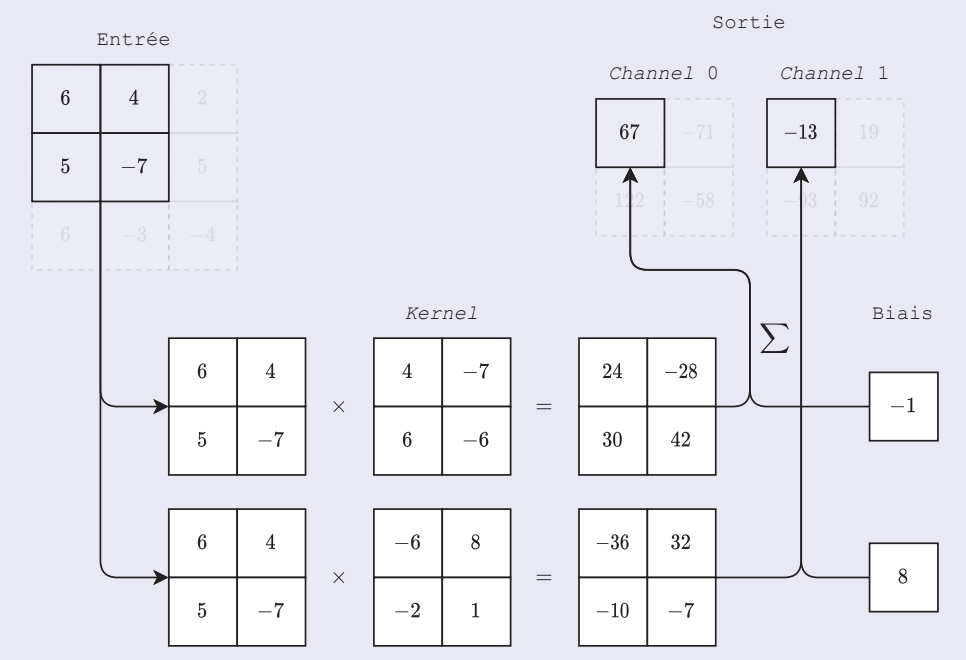
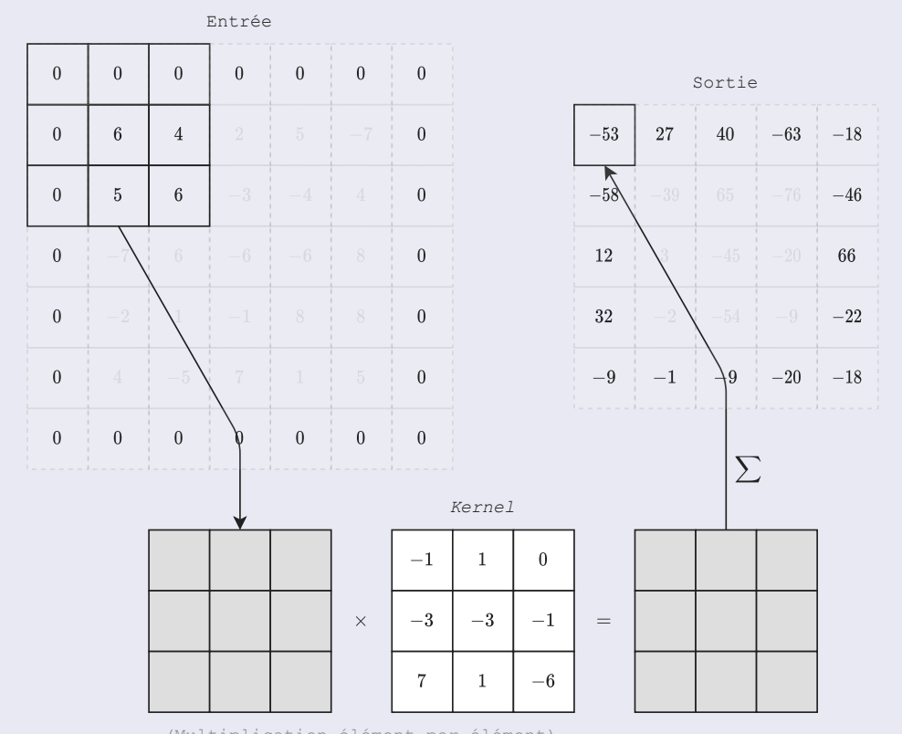
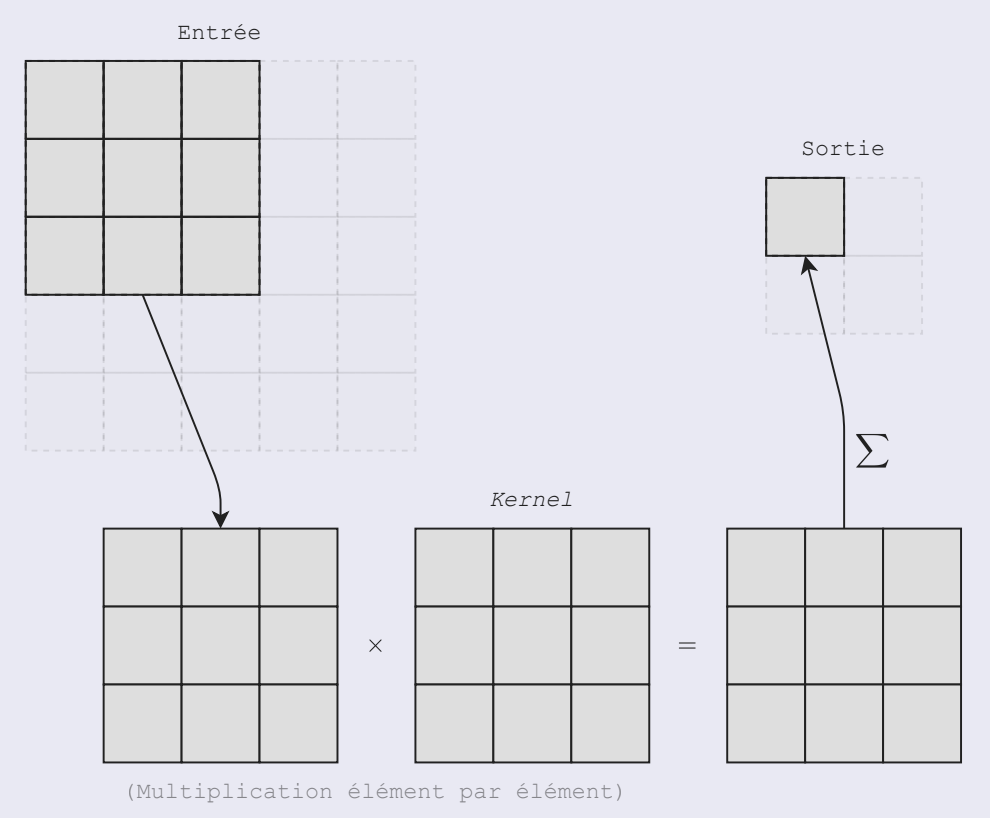
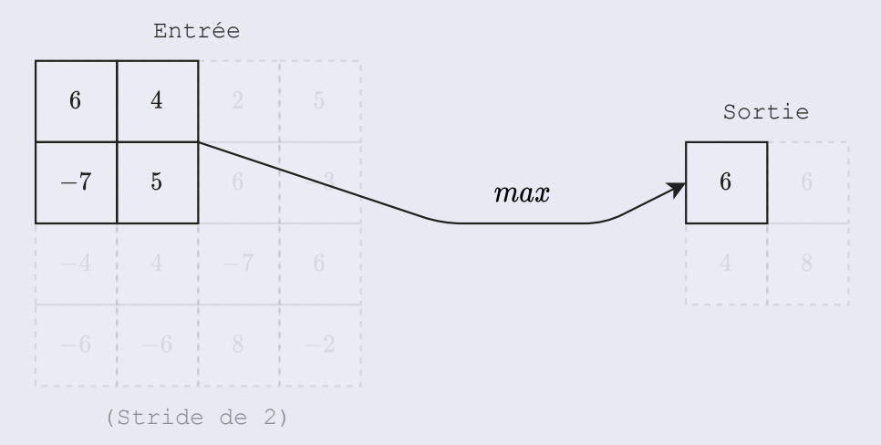

BIML - Bio-Inspired Machine Learning#
Dispensé par : Mathieu Lefort, Rémy Cazabet et Frédéric Armetta (2023 - Sept.Nov)
Introduction aux réseaux de neurones#
Mathieu Lefort
Principes généraux de l’apprentissage profond#
Objectifs de l’apprentissage
Mémorisation : Retrouver la réponse à une entrée déjà vue.
Généralisation : Retrouver la réponse à une entrée jamais vue.
Hypothèses : Fonction localement continue, rasoir d’Occam.
Techniques : Ensemble d’apprentissage/validation/test, régularisation, …
Supervisé : \(y = f(x)\) avec \(x \in X\) et \(y \in Y\).
Régression : \(Y\) continu, typiquement \(\mathbb{R}^{n}\).
Classification : \(Y\) discret.
En pratique : \(f(x) = \sum_{i=1}^{n}(a_{i}^{T} \cdot x + b_{i})\phi (x, \theta_{i})\) avec \(\phi\) une fonction non linéaire paramétrée par \(\theta_{i}, b_{i} \in \mathbb{R}^{card(Y)}\) et \(a_{i} \in \mathbb{R}^{card(Y)\times card(X)}\).
Non supervisé : \(f(x)\) avec \(x \in X\).
Clustering : Regroupement des entrées par groupes.
Génératif : Apprentissage de la distribution \(p(x)\) (par ex. \(x=f(\tilde{x})\)).
Par renforcement, par imitation, …
Neurone artificiel#
Inspiration biologique :
\[\begin{split}y = \begin{cases} 1 & \text{si } \sum_{i=1}^{n}w_{i}x_{i} - \theta > 0 \\ 0 & \text{sinon} \end{cases}\end{split}\]Le neurone en apprentissage automatique :
\[\begin{split}y = \begin{cases} 1 & \text{si } \sum_{i=0}^{n}w_{i}x_{i} - \theta > 0 = w^{T}x > 0 \\ 0 & \text{sinon} \end{cases}\end{split}\]
Perceptron (Multi Couches)#
Détailler dans le cours d’apprentissage profond : 3ème modèle : Perceptron.
Propriétés du PMC
Approximateur universel (avec fonction d’activation sigmoïde ou gaussienne entre autres).
Convergence potentiellement peu efficace (non convexe, espace de haute dimension, gradient évanescent ou non borné, …).
Réseaux Convolutionnels#
{kind=link}
Convolution (rappel)#
{kind=link}
Neurone de convolution#
Convolution :
 Couche de convolution#
Padding :
 Padding#
Stride :
 Stride#
Pooling :
 Pooling#
{kind=link}
{kind=link}
{kind=link}
{kind=link}
Architectures#
{kind=link}
{kind=link}
Bilan des réseaux convolutionnels
De la convolution pour son invariance à la translation et partage de poids.
Du pooling pour réduire les dimensionnalités.
Un perceptron à la fin car plus de structure spatiale en haut niveau.
Architecture transposable à la 1D (audio), à la 3D (vidéo), aux graphes, …
Panorama général du domaine et Trucs & Astuces#
Le zoo des réseaux de neurones.
Traitement des données :
Equilibrage/représentativité des données penser aux biais.
Augmentation des données.
Données centées normées : \(\frac{x-\bar{x}}{\sigma(x)}\).
Utilisation de mini batchs.
Choix du modèle :
Type d’architecture suivant les données / le problème.
Choix de la fonction d’activation.
Apprentissage :
Fonction de coût :
Régression : Erreur quadratique moyenne (MSE). \(\frac{1}{2}\sum_{x,i}(t_{i}-y_{i})^{2}\)
Classification : Entropie croisée. \(\sum_{x}-log\frac{e^{yt}}{\sum_{i}e^{yi}}\)
Régularisation : \(+||w||\) dans la fonction de coût.
Bruitage / drop out : mise à 0 de certaines valeurs.
Choix de l’optimiseur :
SGD : La base.
momentum : Rajout d’inertie dans le gradient.
Adagrad : Adaptation du taux d’apprentissage (en fonction du gradient).
Adam : Combinaison des 2 points précédents.
Obtenir les meilleurs performance :
Hyperparamètrage : on part d’un réglage de base …
pour le MLP : une grande 1ère couche, puis taille décroissante.
pour le CNN : augmentation du nombre de canaux à chaque couche (qui compense la réduction de la taille de la carte de features).
… et ensuite on cherche empiriquement (grid search, random search, …) ce qui marche sur le jeu de validation.
Fine tuning : on part d’un modèle générique pré appris et on l’adapte localement à nos données.
Limitations de l’apprentissage profond#
Surapprentissage
Bruit
Biais
Oubli catastrophique (oubli des anciennes données)
Connexion résiduelle#
Activations sautes des couches.
Gradient important remonte via les connections résiduelles.
\(\rightarrow\) réduit le vanishing gradient problem.
Couche de Batch Norm#
Normaliser les activations, puis change moyenne et variance à l’aide des paramètres apprenables.
Permet d’entraîner des réseaux plus profonds et plus rapidement.
Peut aider à stabiliser l’apprentissage.
Graph Neural Network (GNN)#
Rémy Cazabet
Intro#
Convolution#
Différences entre image et graphe
Dans les réseaux, il n’y a pas le même nombre de voisins pour chaque noeuds.
La représentation matricielle : C’est le même objet mais l’interpretation change. La position d’un noeud (d’un graphe) dans la matrice n’a pas de signification.
{kind=link}
Définition
Intuition sur les couches#
Convolution dans les images :
Calcule une somme pondérée des valeurs des voisins.
Souvent suivi d’un pooling.
Convolution dans les graphes : Les poids ne peuvent pas être appris directement.
La moyenne des caractéristiques des voisins (comme un pooling).
Calcule la somme pondérée des caractéristiques des voisins.
Une convolution sur les graphes peut être vu comme une couche linéaire avec :
En entrée : La moyenne des caractéristiques des voisins.
En sortie : Une imbrication du nombre de dimensions.
Avertissement
Les items d’un dataset d’image sont indépendentes les unes des autres.
Pas les graphes. On peut traiter les noeuds indépendemment mais les caractéristiques ne doivent pas être cachés. Seulement les cibles peuvent être découpées en train/test.
Convolution de graphe#
{kind=link}
Stacking convolution layers#
Les résultats dépendent des voisins.
Les résultats dépendent des voisins des voisins.
…
Note
Similaire aux convolutions dans les images.
GCN equation#
\(H^{(l)}\) : Matrice des caractéristiques des noeuds à la couche \(l\).
\(A\) : Matrice d’adjacence du graphe. \((\hat{A} = A + I)\)
\(\hat{D}\) : Matrice diagonale des degrés des noeuds.
\(W^{(l)}\) : Matrice des poids de la couche \(l\).
\(\sigma\) : Fonction d’activation (souvent relu).
{kind=link}
Graphe : Karate Club#
{kind=link}
Matrice d’adjacence \(\hat{A}\)#
Normalisation de la matrice d’adjacence
{kind=link}
Moyenne \(D^{-1}\hat{A}\)#
{kind=link}
Moyenne par degrés \(\hat{D}^{-\frac{1}{2}}\hat{A}\hat{D}^{-\frac{1}{2}}\)#
Chaque imbrication est calculée comme :
\(h_{j}^{l}\) : Caractéristiques du noeud \(j\) à l’ancienne couche.
GCN : step by step (Sans caractéristiques : seulement stucture)#
\(d_{0}\) : Nombre de caractéristiques par noeuds dans le graphe d’origine.
\(d_{n+1}\) : Nombre de caractéristiques voulues.
Phase avant#
Phase arrière#
Résumé
Une fonction de perte est définie pour comparer les valeurs calculées et les vrais labels.
La dérivée de la fonction de perte est calculée par rapport aux poids.
Les poids sont mis à jour en utilisant la descente de gradient.
Les labels sont connus seulement pour quelques noeuds.
On choisit une fonction de perte pour de la classification binaire.
GAT#
Une matrice d’attention apprenable qui convertit les imbrications de noeuds vers des nouvelles imbrications pour l’attention.
\(z_{i} = Wh_{i}\)
\(W\) : Matrice de poids apprenable.
\(h_{i}\) : Caractéristiques du noeud \(i\).
On ne veut pas que les imbrications soient combinées avec la position dans le graphe ou la manière dont il se comporte pour l’attention des autres.
Concaténer les deux imbrications.
\(z_{i} || z_{j}\)\([a,b,c]||[f,e,d] = [a,b,c,f,e,d]\)\(e_{ij} = a^{T}[z_{i}||z_{j}]\)Ajouter une fonction d’activation.
\(e_{ij} = ReLu(a^{T}[z_{i}||z_{j}])\)
Normalisation softmax.
On a des scores d’attention non normalisés.
\(\alpha_{ij} = softmax(e_{ij}) = \frac{exp(e_{ij})}{\sum_{k \in N_{i}}exp(e_{ik})}\)
Graph Autoencoder#
{kind=link}
Autoencoder#
Architecture classique
Encodeur : Des couches de GCN.
Décodeur : Un dot product entre les embeddings, plus une activation.
On minimise la binary cross entropy entre les matrices d’adjacences d’entrées et de sorties.
Variantes#
Limites des AE
Pauvre continuité.
Pauvre complétude.
{kind=link}
VAE#
Les entrées sont encodées sur un espace latent comme une distribution gaussienne.
Un point de l’espace latent est échantillonné.
Le point est décodé pour reconstruire les entrées.
La perte est calculée entre les entrées et les sorties.
La perte est rétropropagée pour mettre à jour les poids.
Couche 1 : Un GCN.
Couche 2 : 2 GCN en parallèle (un pour apprendre le centroid et un pour la variance).
Pour décoder : On prend un point aléatoire de la multivariate gaussian.
Link prediction#
Transductive/Inductive#
Transductive : On a accès à tout le graphe. On cache une partie des labels.
Inductive : Entraînement sur un set de noeuds/graphes. Le résultat est appliqué sur des noeuds/graphes inconnus.
Graphe multi-partite#
Deep Learning for Natural Language Processing (NLP)#
Note
Introduction#
Classification : Analyse de sentiments ; classifications de textes ; détection de spam ; …
Génération : Prédiction de mots ; Résumé de textes ; …
Tagging : Part-of-speech tagging ; spell checking ; …
étendus à la reconnaissance vocale, la reconnaissance de caractères, …
Apprentissage auto-supervisé : Un énorme dataset pour faire apprendre le réseau.
Fine tuning : Spécialise pour une tâche spécifique, pour faire apprendre les dernières couches.
Word encoding#
Première idée#
One-hot encoding (lettres)#
One-hot encoding (mots)#
Word embedding#
CBOW : Prédit un mot grâce à la proximité des mots.
Skip-gram : Prédit les mots voisins grâce à un mot.
RNN & NLP#
{kind=link}
Recurrent Neural Network#
{kind=link}
Long Short Term Memory#
(Il présente plusieurs modèles mais bon OSEF…)
Seq2Seq#
{kind=link}
Sequence 2 Sequence model#
{kind=link}
Teacher Forcing#
{kind=link}
Attention Mechanism#
{kind=link}
Attention function#
Transformer#
{kind=link}
Self-Attention#
{kind=link}
Queries, Keys, Values#
{kind=link}
Transformer#
{kind=link}
Multi-Head Attention#
{kind=link}
Transformer Model#
{kind=link}
Learning#